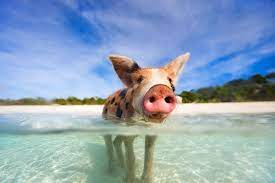
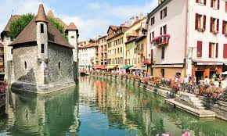
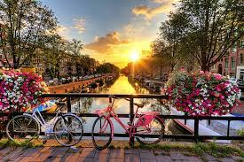

Hello, moi c'est Pauline !
Etudiante en Master1 Marketing Digital et Innovation à l'IESEG, je me lance dans l'entreprenariat pour révolutionner le monde de la couture !
Découvre StitchMon parcours en quelques lignes
J'ai réalisé mes trois premières années d'étude supérieures à EDC Paris Business School, où j'ai pu avoir une vision 360° des différents domaines du commerce, du marketing aux fondamentaux de l'entreprenariat, en passant pas les basiques de la finance et du droit.
Passionnée par l'innovation et l'entreprenariat, j'ai décidé de rejoindre l'IESEG School of Management pour me spécialiser en master Marketing Digital et Innovation.
Il s'agit d'un master en apprentissage, j'ai donc rejoint le groupe Crédit Agricole pour une experience de 2 ans en septembre 2022, en tant que chargée de communication interne et Webmaster de la ligne métier Audit Inspection.
J'ai depuis peu décidé de me lancer dans le monde de l'entreprenariat en intégrant l'incubateur de l'IESEG !
Si tu veux en savoir un peu plus sur moi...
Ce que j'aime dans la vie, c'est : Passer du temps avec les gens que j'aime, les animaux, la photographie, le piano, et voyager !
-
Bahamas
Mon voyage aux Bahamas en mars 2023
En savoir plus -
Montréal

J'ai eu la chance d'effectuer un échange universitaire de 4 mois dans la ville de Montréal en 2022 !
En savoir plus -
Canada
Mes aventures au Canada
En savoir plus -
Les capitales d'Europe
J'adore visiter les capitales d'Europe durant un week-end
En savoir plus -
France
Pas besoin d'aller à l'autre bout du monde pour être dépaysé ! Je te montre les endroits en France que je préfère
En savoir plus -
Amsterdam
Long week-end aux Pays-Bas
En savoir plus -
Les cyclades
Petit tour dans les cyclades en Grèce
En savoir plus -
Bali
Un voyage que je n'oublierai jamais
En savoir plus